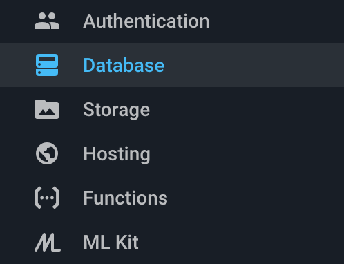
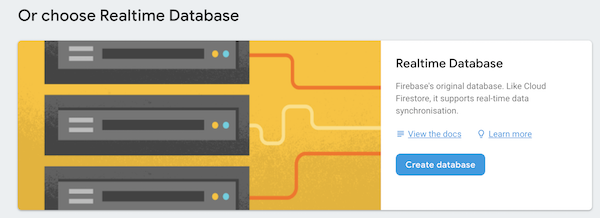
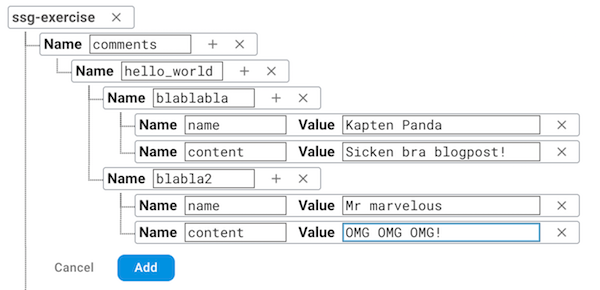
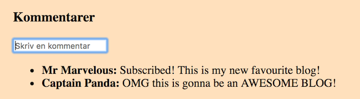
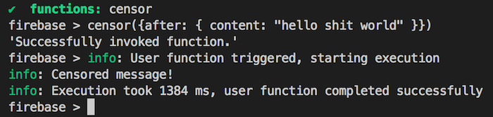
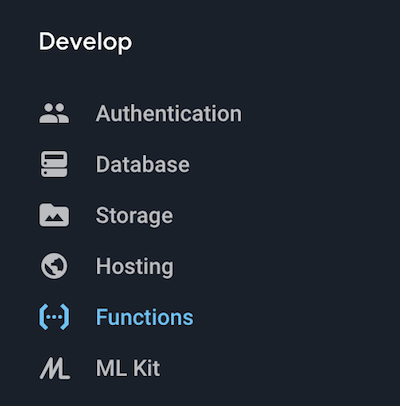
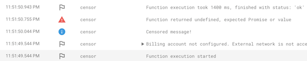

More Firebase
Return fireSections in this chapter
Database
Realtime shenanigans
Firebase's claim to fame is of course the database.
Let's dig into how it works!
...except we first have to decide which database to use, since we have two!
- Realtime database (the original)
- Firestore (in beta)
The differences are explained here:
https://firebase.google.com/docs/database/rtdb-vs-firestore
We will focus on the original realtime database.
The basic concept is ridiculously simple - our data is just a big object:
{
"comments": {
"hfue3824": {
"authorId": "jlkh32u432",
"content": "I dreamt i lost my teeth"
}
// ...
},
"users": {
// ...
}
}
In our JavaScript code we get a reference to a certain point in the tree:
let ref = firebase.database().ref("/comments");
On that reference we can then subscribe to changes:
ref.on("value", function(snapshot) {
let comments = snapshot.val();
});
This will be called immediately and for all changes.
We can set the tree at that point:
ref.set({ haha: "all comments now gone" });
Or we can push a new child:
ref.push({
name: user.name,
content: field.value
});
This is now at /comments/someNewGUID/.
The intro guides can be found here:
Some selling points:
- Database in the cloud
- objects all the way
- free "push" functionality
- dead simple to integrate
Exercise - comments I
Read
We will now show comments from a database below each post!
Here's the plan:
- aCreate database with fake data
- bInitialize DB clientside
- cShow data on post pages
First, create a database!
Go to https://console.firebase.google.com/ and click on your project
Now select Database in the left-hand menu.

You'll get a spammy option screen - scroll down to find realtime database.

In the next popup, select test mode:

In the data tab, fill in some fake data!

In other words we want this structure:
comments // <-- just as a high-level namespace
hello_world // <--- the slug for a blog
blablabla // <--- just a made-up guid
name: NameOfCommenter
content: CommentContent
Test it locally on your machine by executing:
firebase database:get "/comments"
Before we get into loading the comments, we need to do some general firebase initialising in the client code!
Add a new file init in a scripts folder in static:
/static
/scripts
init.js
In that file we need to initialise firebase:
firebase.initializeApp({
// your config
});
To see what goes in the config, check https://firebase.google.com/docs/database/web/start
(for now you just need apiKey and databaseURL)
Now add that file, along with some firebase source files, to the head in the master template:
<script src="https://www.gstatic.com/firebasejs/5.5.7/firebase-app.js"></script>
<script src="https://www.gstatic.com/firebasejs/5.5.7/firebase-database.js"></script>
<script src="scripts/init.js"></script>
Time to show the comments! First, add some HTML to the bottom of the post template:
<hr/>
<h3>Kommentarer</h3>
<ul id="comments">...laddar...</ul>
Add a new script file comments to house the loading code!
/static
/scripts
comments.js
That file should update the DOM whenever we get new comments:
database.ref("/comments/" + window.postSlug).on("value", function(snapshot) {
// object with generated keys,
// each value is object with { name, content }
// (or we get null if there are now comments)
var comments = snapshot.val();
// ...build HTML from comments here...
document.getElementById("comments").innerHTML = html;
});
Wait - window.postSlug, where did that come from?
We set it in the post template, where we also link in the comments file:
<script>window.postId = "${post.slug}";</script>
<script src="scripts/comments.js"></script>
Now,
- regenerate the blog
- serve it locally
- navigate to post with slugId from DB
- enjoy the (static) discussion!
Exercise - comments II
Write
We should probably allow our users to write comments too!

This means...
- adding an input to the post template
- adding a listener in
comments.js
That listener should trigger when we hit Enter, and update the DB:
database.ref("/comments/" + window.postId).push({
name: "Anonymous",
content: field.value
});
...wait, that's it?
Yep, off you go! :)
More functions
I can't function without you
Let's talk some more about functions!
They can be triggered by a bunch of things...
...and do a lot of things!
Let's now focus on this scenario:
By using the functions package...
const funcs = require("firebase-functions");
...we can get a reference to a point in the tree...
const ref = funcs.database.ref(path);
...where we register a listener on events
ref.onWrite(handler);
The path we pass in often wants to filter some parts:
const path = "/comments/{postId}/{commentId}";
The handler we use gets two things passed in:
function handler(change, context) {
// ...
}
changehas the new data, and methods to manipulate the DBcontexthas metadata such as thepostIdandcommentIdfrom the path
In other words there are many parallels with the client-side code!
How do we test this code? Must we...
- deploy them
- trigger them
- check the online logs
...because that seems like a big hassle?
Fortunately, no! This is where the shell comes in.
firebase functions:shell
That command will open a REPL, where all functions are available. Simply call your function with some test data, and see what happens!

The exact format of the input data (and options) vary with trigger type - see full docs here:
If you don't want to type the test code inline in the shell, you can pipe it in from a file:
firebase functions:shell < myFileWithTestCode.js
While the shell is for testing during development, there's also a unit test tool:
npm install --save-dev firebase-functions-test
It gives you similar test capabilities, allowing you to express unit tests in a convenient form.
More details here: https://firebase.google.com/docs/functions/unit-testing
As a final note - the firebase team have a repo full of function examples here:
Exercise - censoring
Function gymnastics
Let's keep the peace by moderating messages!
(idea stolen from firebase function samples, sorry)
- aset up functions in project
- badd dependencies
- cadd censor file
- dpublish functions to server
- etry it out!
First we set up project to use functions!
Add this to the firebase.json:
"functions": {
"source": "functions"
}
And, of course, create the corresponding folder with an index.js file:
/functions
index.js
Next, set up the dependencies! Add a package.json file next to index.js...
/function
package.json
...and make it valid JSON by adding this inside it:
{}
Add the following dependencies:
npm install firebase-functions firebase-admin bad-words
Observe that we do this in the functions dir, and not for the root package.json!
Wait - firebase-admin?
This is for giving server code admin priviliges. Sometimes we need to interact with it, but for this function it is enough to just include it.
More info here:
Now for the actual coding part - let's make our censoring function inside index.js!
It should
- trigger on every comment write, and
- rewrite the comment if it has bad words!
We register an onWrite function like this:
const functions = require("firebase-functions");
exports.censor = functions.database
.ref("/comments/{postId}/{commentId}")
.onWrite((change, context) => {
// implementation goes here
});
We can get the new message object like this:
change.after.val();
And update it like this:
return change.after.ref.update(cleanedMessage);
To make Firebase really happy, your function should return...
nullif it didn't do anything- the
.updatereturn value (hencereturnon the previous slide)
You should also use console.log to show what you're doing, since that will show up in the online function logs.
So how do we determine if a message contains swearing? And how do we clean it?
We use the bad-words package!
See instructions here: https://www.npmjs.com/package/bad-words
Once you think you have something that might work, do...
firebase deploy --only functions
This will
- push the contents of the function source folder to the firebase server
- register all exports from the
index.jsfile as functions and hook them up
Go to the Functions part in the console...

...and you should see your function in the dasboard list!
Time to try it out!
Visit your blog and add some new vulgar comments.
If the censor function is working, the comment should change after a few seconds!
How do we debug this if that doesn't happen? Visit the log tab in the dashboard!

You can also download the logs to the terminal by:
firebase functions:log
And, of course, you can also use the shell to develop and debug your function!